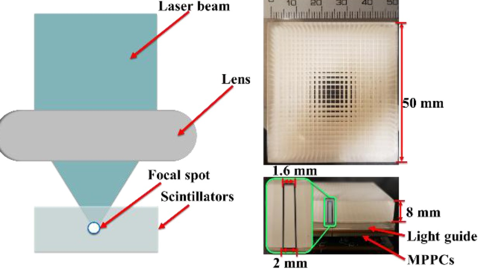

Laser-Processed Converging-Pixel CsI:Tl Detectors
A femtosecond laser writes optical barriers inside an intact 50 × 50 × 8 mm CsI:Tl crystal, turning it into a 25 × 25 array with no sawing, no reflectors and 100% process yield. The pixels converge from 1.6 mm at the entrance face to 2 mm at the photodetector, so each pixel axis follows the collimator’s line of response and depth-of-interaction parallax disappears without any DOI decoding. A four-axis pencil-beam platform calibrates the detector, and maximum-likelihood decoding resolves every pixel where center-of-gravity fails: 1.00 ± 0.42 mm localization accuracy and 11.8% energy resolution at 122 keV.
- Maximum-likelihood position decoding of laser-processed converging-pixel CsI:Tl detectors for high-resolution SPECT · IEEE TRPMS, under review
- Laser-processed CsI:Tl detector with converging pixels · IEEE NSS/MIC 2025
- Grooved microstructures on LYSO with a femtosecond laser · Med Phys 2025
- Femtosecond-laser processing of photonic crystals · IEEE NSS/MIC 2020